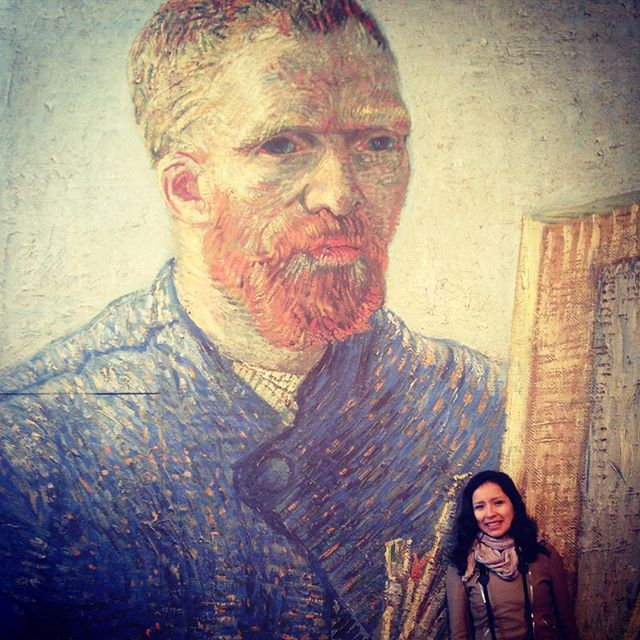

What I learned at Vincent Van gogh Museum
Hi! I spent one afternoon at the Museum of Vincent Van gogh in Amsterdam, The Netherlands last March (during holidays for Eastern).
I was impressed that the famous "The Starry Night" paint is not in this museum!. But anyway, I enjoyed learning from his life
and how he innovated art!

I would like to share this :)
- age is not a problem! at all!, you can start right now. Go for your passion, right now!
- family is important! keep in touch with parents/siblings (send them letters, as Van Gogh used to do)
- train yourself! you need to realize what you want to do! and start training yourself! maybe you can be your best teacher!
- try new things!!! As any other interesting history! Van gogh was not meant to be an artist at the begining, but curiosity and the courage to try new things can lead you to find your passion.
- show innovation that is why you will be able to change the world